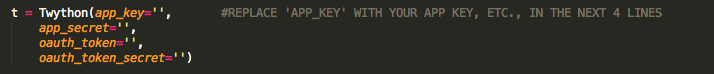
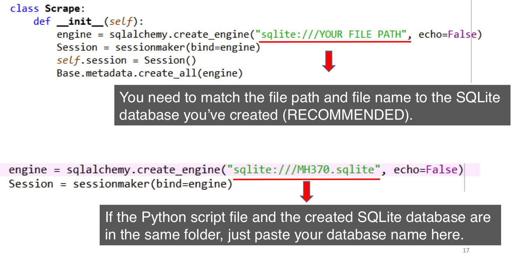

Mining Twitter with Python
Brought to you by CodeKitchen
Before we start
Make sure you have Python, Sublime Text or some other text editor installed.
In this workshop we will talk about is API and how to interact with it through example of Twitter's API.
Part 1: What is an API?
API stands for Application Programming Interface. Formally, it is a set of routines, protocols, and tools for building software applications.
Think of them as
Doors to Code or Data
APIs are sets of requirements that govern how one application can talk to another.
APIs "expose" some of a program's internal functions to the outside world in a limited fashion. That makes it possible for applications to share data
Examples:
- Yelp displays nearby restaurants on a Google Map in its app
- Video games now let players chat and invite friends to play via Facebook, right there in the middle of a game
Part 2: How to interact with Twitter API?
There are multiple ways to interact with Twitter API - you can search for specific tweets in some location, get realtime stream data, look for tweets of particular users, etc. In this workshop, we will be demonstrating how to get tweets based on a list of twitter handles.
High level outline of how we will proceed:
- Create a list of Twitter users we want to get tweets for (as a
.csvfile) - Import the
.csvfile as a table in sqlite database - Use the database table to request data from Twitter
- Save response from Twitter as another table in sqlite database
Part 2.1: Setting up API keys
The first step is to make sure we have a "proper access" to the data on Twitter. "Proper access" means that you need: API Key, API Secret, Access token, Access token secret. First, go to https://apps.twitter.com/, and sign in with your Twitter account. Go to my applications page to create an application.
After creating the app, go to Keys and Access Tokens tab, scroll down to the bottom and click Create my access token. Wait for a few minutes and refresh the page, then you get all your keys!
The next step is to determine which fields per each user we would like to get data on. You can look at definitions for the variables returned from API later, below is a list of some fields we would like to use in today's workshop.
Part 2.2: Prepare a Twitter handle list

Create a CSV file that has 3 columns: id, twitter handle, and an extra column of all 1s(you may leave it blank). Save the file in some folder that makes sense to you. As we create more files, save them in this location as well.
Part 2.3: Installing necessary Python packages
To use our code, you need the following libraries:
- Simplejson (
https://pypi.python.org/pypi/simplejson) - Twython (
https://twython.readthedocs.org/en/latest/index.html) - Sqlalchemy (
http://www.sqlalchemy.org/)
Before we start installing them...
Let's talk about different types of packages in Python

Installing necessary external Python libraries
On a Mac or Linux, open the Terminal and type pip install twython, pip install simplejson, and pip install sqlalchemy.
On Windows, open CMD, type in the command line pip install twython and other packages as above.
Part 2.4: Create a SQLite database
Go to http://sqlitebrowser.org/ and download SQLite Database Browser. It allows you to view and edit SQLite databases.
Go to File-New Database to create a new database.
Remember the database filename you enter.
Add the extension .sqlite when typing filename. (you can also use extension .db)
Use File-Import Table From CSV File, import the .csv file you’ve saved. Name the imported table as accounts. This table name corresponds to the one we will use in Python script. After you click create, the csv list will be loaded into the database, and you can browse it in Browse Data. Lastly, remember to save the database.
Modify the imported table: Go to Edit-Modify Tables, use Edit field to change column names. To correspond to the Python script, name the first column as rowid, and Fileld Type as Integer; the second column as screen_name, and Field type Text, and the third as user_type, and Text. In the end, the database table is defined as the screenshot.
Part 2.5: Modify the script and Run
Download the script and save it as .py file in the same folder where you saved CSV file and the database file. There are just 3 edits you need to make: provide API keys, give correct filepath to database, and provide the name of the table where the data from Twitter will be saved.
Within the script, find this block of code, and enter your API Keys.
Find this block of code, and enter the filename and file path of the SQLite database you have created.
You may also refine search criteria:
count specifies the number of tweets to try and retrieve for each Twitter handle. The maximum value is 200.
Read more here
Some issues you may encounter..
Some issues you may encounter..
Load the SQLite data into Excel
Important concepts I'd like you to get out of this workshop
- What is an API
- Basic building blocks of Twitter API (oauth, keys, tokens, request, response)
- What is database and why is it useful. What is a query
- How to navigate through file system of your computer using command line (
ls, cd, pwd) - How import statements are structured in a Python script
- What is a notion of
Class